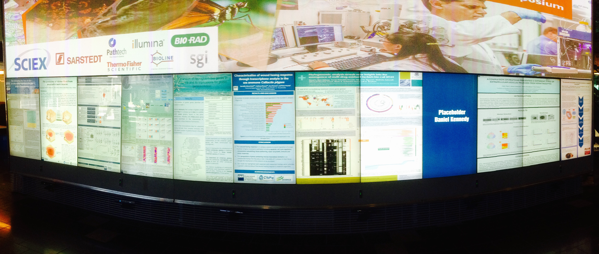

Full paper presentations are allocated 20 minutes + 5 minutes for Q&A. Presenters can use their own laptop computer to plug to the multimedia system (through VGA, HDMI or Thunderbolt) or use the resident computer (running Windows). Please try that your presentation is working on the multimedia system in the break before your session; take the chance also to introduce yourself to the person chairing your session.
Short paper presentations are given as a poster during the Poster and Demo Session (Wednesday 5.00pm-7.00pm). Posters will be presented on large touchscreen monitors (which are parts of the QUT Cube), see below for an example. Poster presenters will need to prepare their posters in PDF, powerpoint, PNG (or any standard image format) as if they were to be printed. Electronic posters have to be emailed to airs2015@airs-conference.org by November 30 to give QUT technical services enough time to setup the posters on the system (in case they need to be adapted). If sending a large file, consider using a filesharing option (e.g. Dropbox) and provide us with a link. Presenters will receive an email within 12 hours from receiving your poster. Posters can be designed in portrait or landscape format; ensure the posters have good resolution (e.g. 1080x1920 pixels). There is no need to carry a large paper print of the poster.
Demo paper presentations are given during the Poster and Demo Session (Wednesday 5.00pm-7.00pm). A table with a large screen (VGA port) will be made available for each demo. Demo setup will take place at the end of Session 3.